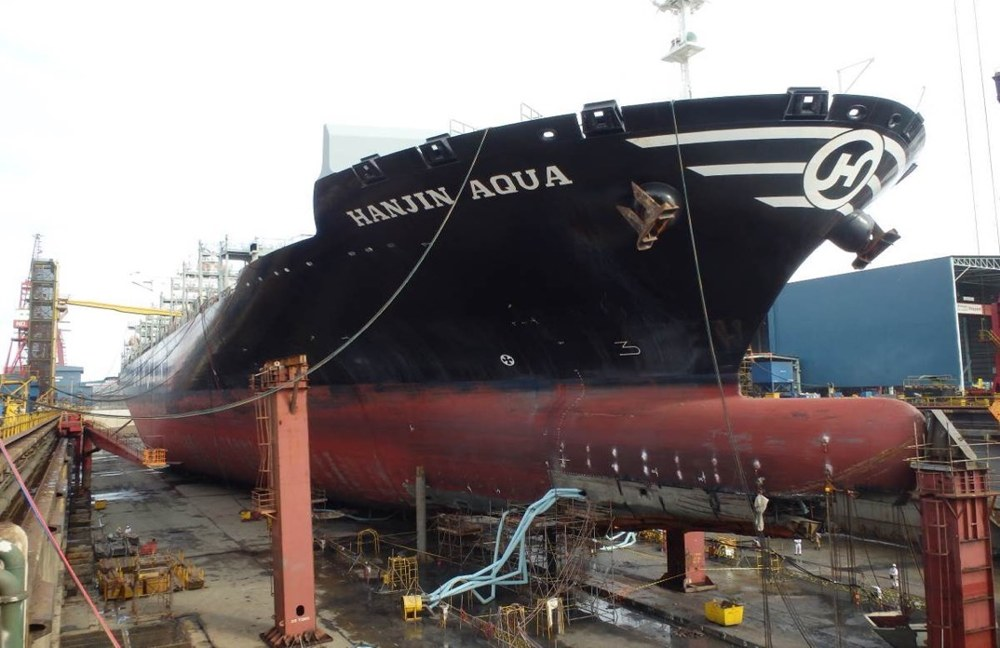

구상선수 (Bulbous Bow)
검수 완료

쉽게 풀면
배 앞쪽 물속에 둥근 혹을 붙여서 물결을 줄이는 방법이다.
왜 중요한가
구상선수는 설계 속력 부근에서 조파저항을 크게 줄여 연료를 절감하므로, 대형 상선 대부분에 채택되며 선형 최적화 연구에서 가장 자주 변경되는 형상 변수이다. 실무에서는 감속 운항이 일반화되면서 기존 선박의 구상선수를 저속에 맞게 개조하는 사업이 실제로 이루어졌고, 그 효과는 예인수조시험과 해상시운전으로 검증된다.
핵심 정리
구상선수(球狀船首)는 선수 수면 아래에 튀어나온 구(球) 모양 돌출부다. 구가 만드는 파가 선수파와 파괴 간섭을 일으켜 상쇄하므로 조파 저항과 항적이 줄어 항력이 낮아진다. 구는 선수 쪽 부력도 더해 피칭을 약간 줄인다. 조파 저항은 선체가 물을 밀어내 파를 만드는 데 쓰는 에너지에서 오는 항력이며, 점성 항력·압력 항력과 함께 전체 항력을 이룬다.
예시로 보기
선수파와 선미파가 서로 간섭하고 그 결과가 저항을 정한다. 수선 길이가 파장의 절반이면 상쇄되고 같으면 강화된다. 파의 위상 속도가 파장에 따라 달라 저항은 속도 대 수선 길이로 정해지며, 이 비가 프루드 수와 선체 속도 경험칙의 바탕이다. 속도-길이 비가 약 0.94이면 배수형 선체가 선수파를 앞지르기 시작하고, 약 1.34에서는 선미가 가라앉고 선수가 들려 저항이 가파르게 오른다. 대형 선박 대부분은 1.0 아래에서 운항한다.
구상선수의 이점은 속도가 높을수록 커진다. 큰 선박에서는 구상선수가 없는 비슷한 선박보다 연료 효율이 대체로 12~15% 좋다.
자주 하는 오해
- 구는 젖은 표면적을 늘려 항력을 늘리므로 저속에서는 파 감쇠 이점이 이를 상쇄하지 못해 비효율적이다.
- 약 4,000 dwt 미만이거나 12노트 미만의 선박은 와류 때문에 이득이 작고, 수선 길이가 약 15 m를 넘어야 소형선에서도 이득이 있다. 구는 운항 속도에 맞게 최적화해야 한다.
- 1900년 이전 예인 시험에서 수중 램 모양이 저항을 줄이는 것이 확인되었다. 데이비드 테일러가 개념을 USS 델라웨어(1910년 취역)에 적용했고, 이누이 다카오가 도쿄대에서 현대적 구상선수를 개발했다. 이때 항력 감소는 약 5%로 확인되었다.
- 조파 저항을 줄이는 다른 방법으로 배수량 감소, 날렵한 선수, 설계 속도에 맞춘 선형 다듬기가 있다.
논문에서는 이렇게 쓰입니다
예시 문장
아래 예문은 용어의 쓰임을 보이려고 만든 것으로, 실제 논문 문장이 아니다.
컨테이너선의 구상선수 형상을 설계속도에 맞추어 최적화하여 조파저항계수를 저감한다.
선수 아래 둥근 형상이 만드는 파와 선체 자체가 만드는 파가 서로 상쇄되도록 설계하면, 물살을 가르는 데 드는 저항이 줄어 연비가 개선된다는 의미이다.
조금 더 깊게 보면
구상선수는 파를 상쇄하는 원리상 특정 속력과 흘수에 맞춰 설계되므로, 설계점을 벗어난 저속이나 밸러스트 흘수에서는 오히려 저항이 늘어날 수 있다. 이 때문에 운항 프로파일이 넓은 선박에서는 구상선수를 작게 하거나 없애는 선택도 있다. 또한 벌브는 수선 아래 형상이라 슬래밍과 앵커 체인 간섭도 고려해야 하며, 구상선수가 곧 저항 저감이라는 등식은 성립하지 않는다. 구상선수가 만드는 파는 선체 자체가 만드는 선수파와 위상이 반 파장 어긋나 마루와 골이 겹치도록 설계되어야 상쇄 효과가 최대가 되므로, 벌브의 종방향 위치와 부피가 특정 설계속력에 정밀하게 맞춰져야 한다.
주의할 점
최근 저속운항이 늘면서 설계속도보다 낮은 속도에서 운항하는 선박은 구상선수 형상을 저속에 맞게 재설계할 필요가 있다.
참고 문헌
- Wikipedia contributors. (n.d.). Bulbous bow. Wikipedia.
- Wikipedia contributors. (n.d.). Wave resistance. Wikipedia.